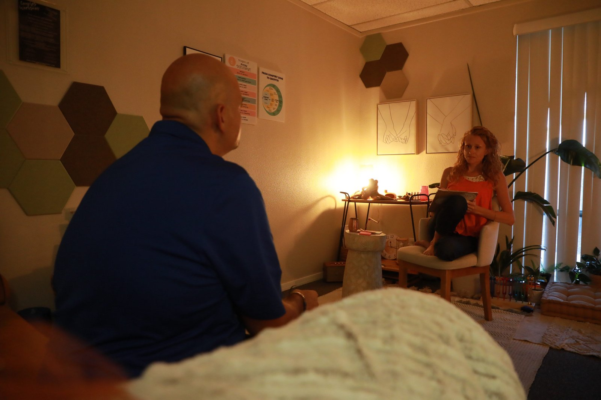
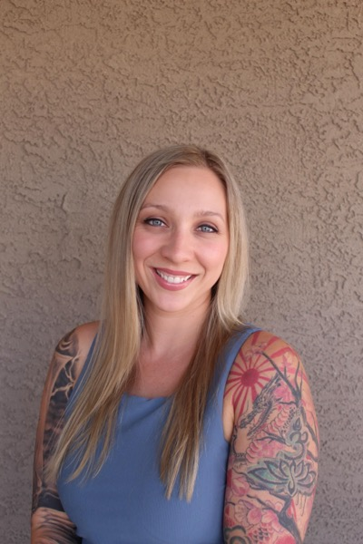

Meet Your Therapist
Hi, I'm Alicia.
Therapist. Tantra practitioner. Single mom. Real human who has done — and is still doing — the work.

My Story
I started doing this work because somebody had to do it for me first.
I started as a Drug & Alcohol Counselor in the Air Force back in 2010. That's where I first learned what it looks like to sit across from someone in their hardest moment and just stay. In 2019 I opened my private practice, and I had this quiet, secret dream — that I'd build a place of my own. A place where people could come exactly as they are, walk through the hard stuff, and not have to do it alone.
And then in 2018 my whole life cracked open. (Honestly it had been in shambles long before that, I just hadn't been ready to look at it.) I dug into myself, into the work, into recovering and redefining who I was. It was a wrestling match — me against my own past, my trauma, my stories, my fear about money, my fear about my own bigness. Lots of stressful, beautiful, system-rewiring growth.
The Wild Within is, next to my kids, the greatest external sign of my own growth — born from struggle and transformation. It's what came out the other side. And it's why I get to sit across from you and say, with full honesty, I get it. I've been there. Let's walk this together.
Why "The Wild Within"
The name speaks about us and the human experience that is wild — raw, awe-inspiring, natural, organic, perfectly imperfect, evolving. AND uninhabitable, scary, unforgiving, a force. We as humans have this contrast of experience, and parts of us that experience this contrast too. In life we can have experiences that are both awe-inspiring and terrifying. We are complex. We have beauty and beast, parts of Self that we can show to the world and parts of Self that we try to hide.
My goal is to hold space for it all — so people can have a safe space to share and process everything. A powerful place to learn about themselves, the past, how to be more alive in the present, and create a tomorrow they are excited about.
The Wild Within is a place to come be as you are. With safety and comfort, explore, process, heal the past. Learn how to be more alive to the present. Create a future that is worth living. It's a place of learning, growth, and transformation. A place of authentic, genuine, raw and real connection. A place where no one has to walk this life journey alone — especially when the seasons get cold and dark and lonely.

Whole-person, holistic, somatic, grounded.
I believe healing happens when you feel safe enough to be honest. Not the polished version of honest — the messy, complicated, slightly-scared kind. That's where the real work lives.
I treat the whole person.
Mind, body, history, spirit, energy. I don't believe in pulling those apart. Talk therapy alone misses too much. We work with all of you.
I bring my full self.
I'm not a clipboard and a clinical face. I show up grounded, curious, a little irreverent, and very real. I'll laugh with you. I'll get teary with you. I'll tell you when I see something you're avoiding.
I trust your timing.
You set the pace. I'll never push you somewhere you're not ready to go. The work happens when you're safe enough to want it, not before.
Credentials & Training
The clinical and the unconventional, in one place.
I hold both clinical credentials and the kind of training most therapists never go near. Both matter. Both are part of why this works.
- LCSW — Licensed Clinical Social Worker, Arizona
- Air Force Veteran — Drug & Alcohol Counselor since 2010
- MSW — Master of Social Work
- MA, Human Services with an emphasis in Crisis Response & Trauma
- Ketamine-Assisted Psychotherapy (KAP) — certified provider, working with collaborating physician
- EMDR Trained — trauma processing
- Certified Tantric Embodiment Facilitator — meditation, couples work, sacred sexuality
- Certified Kundalini Dance Teacher
- Certified in Yoga Nidra
- CBT/ACT — Cognitive Behavioral Therapy and Acceptance & Commitment Therapy
- Mindfulness & Meditation — integrated into therapy and coaching sessions
- Tantra Yoga Teacher Training — in progress
- Positive Discipline Parenting — for parenting therapy work
- Relational Life Therapy (RLT) — couples
- Parts & Inner Child Healing
- Somatic Movement — basic, gentle, and advanced
- Trained to provide clinical supervision for therapists working toward licensure
You may also work with…
I'm building a small team of practitioners I trust deeply. Right now that includes:
Alicia Wright, LCSW
Founder & Therapist
Therapy, KAP, couples, parenting, tantra coaching, workshops. Available for in-person sessions in Mesa and telehealth across Arizona.
Kyla Gordon
Therapist Intern
BS Psychology, Arizona State University · MSW Candidate, Capella University. Arizona native with several years of experience working with children and adults in complex and high-stress settings, including substance use and crisis response. Passionate about perinatal mental health, parenthood, and navigating identity through life transitions. Trauma-informed and solution-focused, Kyla meets clients where they are with compassion, authenticity, and (when it feels natural) a sense of humor. She strives to create a space where people feel heard, valued, and experience a sense of relief after their time together.

Alisha Anderson, LAC
Licensed Associate Counselor
9 years of mental health experience and 9 years of military service. Alisha takes a holistic approach to therapy and works with children, teens, and adults. Currently accepting limited new clients.
"I'm human and I get it, and I've walked the journey of healing and transformation. My goal is to see people — the totality of who they are — with compassion and grace, and to help them heal and transform. Life is so precious, and the years are short. It goes by so fast. I want to help people live their best life."
— Alicia Wright, LCSW
Alicia helped me find my true self, my inner peace, and my full potential as a partner and as a person. Her ability to help you see inside of yourself and find the missing pieces of what you are searching for is extraordinary. I would say I owe Alicia my life, but she would tell me I did it all myself.
Ways we can work together.
Individual Therapy
Holistic, trauma-informed therapy for anxiety, depression, trauma, and the sacred work of coming back home to yourself.
Learn moreCouples Counseling
Communication, trust repair, and the conflict that builds connection instead of breaking it.
Learn moreKetamine-Assisted Therapy
Real psychotherapy with the medicine. For treatment-resistant depression, PTSD, and trauma that hasn't moved.
Learn moreLet's see if we're a fit.
The first conversation is free. No pressure, no commitment. Just a chance to feel each other out and see if working together feels right.